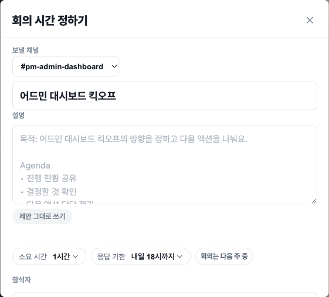
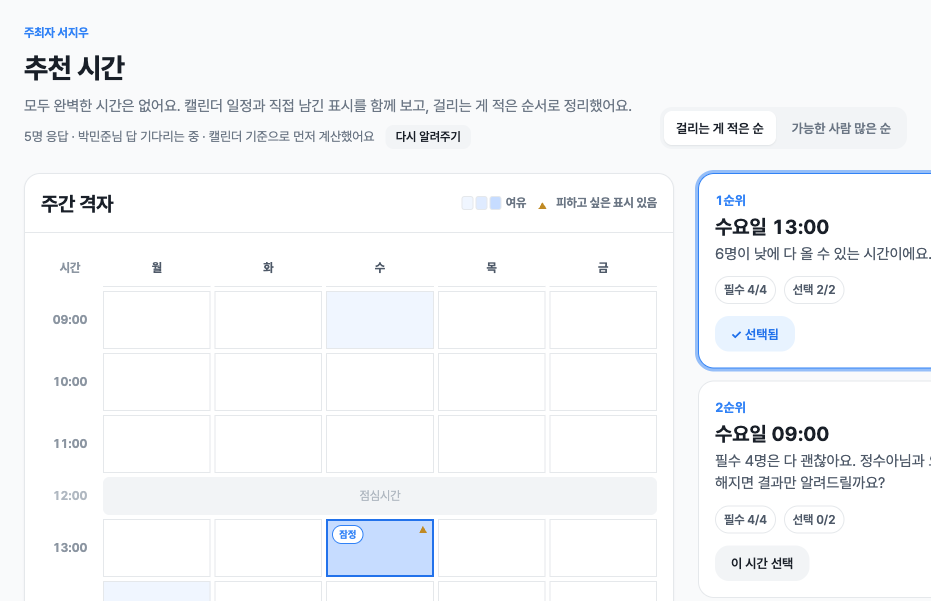
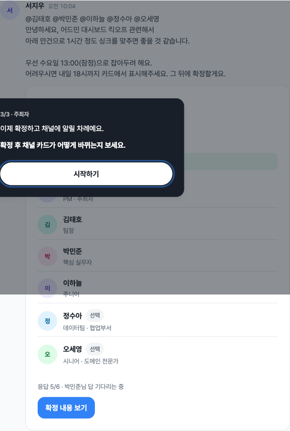

캘린더는 진실이 아니에요.
아직 수락하지 않은 초대, 구두로만 잡은 약속, 연차, 말하기 조심스러운 개인 사정은 애초에 캘린더에 적히지 않아요. 빈 것처럼 보이는 시간이 실제로 빈 시간은 아니에요.
TOSS 프로덕트 디자이너 챌린지 · 케이스 소개
제출 답안에 다 담기 어려운 문제정의와 리서치, 해법의 흐름, 버린 대안을 한 장으로 풀었어요. 프로토타입과 함께 보시면 좋아요.
프로토타입 열기주최자 3분 · 참석자 2분 코스
01 · 문제
아직 수락하지 않은 초대, 구두로만 잡은 약속, 연차, 말하기 조심스러운 개인 사정은 애초에 캘린더에 적히지 않아요. 빈 것처럼 보이는 시간이 실제로 빈 시간은 아니에요.
일정 겹쳐보기 기능이 있어도, 각 팀 대표자에게 물어보고 그 대표자가 팀원에게 다시 묻는 식으로 사람이 손으로 모아요. 잡기 전에 묻는 일이 매번 반복돼요.
그렇게 잡아도 캘린더에 없던 사정이 뒤늦게 드러나요. 그래서 이미 잡은 회의의 시간을 다시 바꾸는 일이 자주 일어나요.
“캘린더만 믿을 수는 없어요.”
세 조직에서 같은 말을 세 번 들었어요.
“각 팀 대표자에게 물어보고, 그 대표자가 팀원들에게 다시 물어요.”
전용 기능이 있어도 수동 취합으로 돌아가요.
“그렇게 잡아도 시간 변경은 자주 발생해요.”
숨은 맥락이 회의를 다시 잡게 만들어요.
02 · 리서치
엔터·테크·전통 대기업·금융, 그리고 이직으로 세 조직을 겪은 비교. 재직자 전언과 데스크 리서치 20건을 더했어요.
경계는 정직하게 그었어요. 이 제품이 서는 조직과 서지 못하는 조직이 나뉘어요.
일정을 성실히 쓰는 조직에선 문제가 약해져요. 그래도 “안 되면 알려달라”는 수동 확인 루프는 남아, 잠정 제안과 기한이 그 자리를 대신해요.
캘린더 불신이 아니라 캘린더 부재라, 우리 문제가 성립하지 않아요. 이건 다른 층의 문제로 두고 이번 범위에서 뺐어요.
03 · 해법

봇이 있는 채널에서 회의를 열면 슬랙 모달이 떠요. 제목을 치면 함께 일한 이력을 바탕으로 참석자가 제안되고, 캘린더 기준 잠정 시간과 채널에 보낼 문안까지 미리 채워져요. 주최자는 확인만 하고 보내요.

참석자는 받은 카드에서 잠정 시간과 응답 기한을 함께 봐요. “피하고 싶은 시간 표시하기”, “언제든 괜찮아요”, “참석 어려워요” 중에서 고르면 되고, 아무 표시가 없으면 잠정안 동의로 읽어요.

기한이 지나면 주최자가 추천을 열어요. 걸리는 게 적은 순으로 먼저 보여주고, “가능한 사람 많은 순”으로 바꿔 비교할 수 있어요. 각 후보 옆에는 왜 이 순위인지 이유가 붙어요.

확정하면 요청을 보냈던 채널의 카드가 확정으로 바뀌고 알림이 가요. 잠정과 시간이 달라졌으면 “처음 안내와 시간이 바뀌었어요” 같은 재확인 문구를 함께 붙여요.
04 · 설계 원칙
직책, 캘린더, 주최자가 지정한 값처럼 실제로 알 수 있는 것만 문장으로 써요. 데이터 근거가 없는 주장은 화면에 올리지 않아요.
채움은 데이터(여유), 테두리는 상태(지금 보는 선택), 기호는 사람이 직접 남긴 표시예요. 판단은 격자가 아니라 카드가 말해요.
잠정안이 바뀌면 이전 동의를 그대로 쓰지 않아요. 바뀐 시간으로 다시 확인받아요.
05 · 버린 대안
익숙하지만, 캘린더가 진실이라는 깨진 전제를 더 크게 만들 뿐이라 버렸어요.
실제 업무에서 쓰이지 않았고, 모두가 보는 곳에서 사정을 드러내라고 강요해서 버렸어요.
우선순위는 사람이 정하고 윗선 회의가 생기면 다시 잡아야 해요. 그래서 자동은 후보를 만드는 데까지만 맡기고, 확정은 사람에게 남겼어요.
06 · 자라날 방향
문화는 UX가 바꾸지 못해요. 하지만 좋은 행동을 가장 쉬운 길로 만들 수는 있어요.
비공개 표시는 선호를 말해도 되는 문화가 없는 조직에서도 개인이 선호를 갖게 하고, 반복되는 표시를 도구가 기억하면 그게 곧 문화가 돼요.
다음 단계는 이 표시를 도구가 기억하는 거예요. “지난번에도 이 시간을 피하셨어요, 이번에도 표시할까요?”처럼 회의 한 건의 입력이 쌓여 개인의 선호로 자라나요. 어떤 조직은 문화가 도구를 쓰게 만들지만, 우리는 도구가 문화를 먼저 싹틔워요.